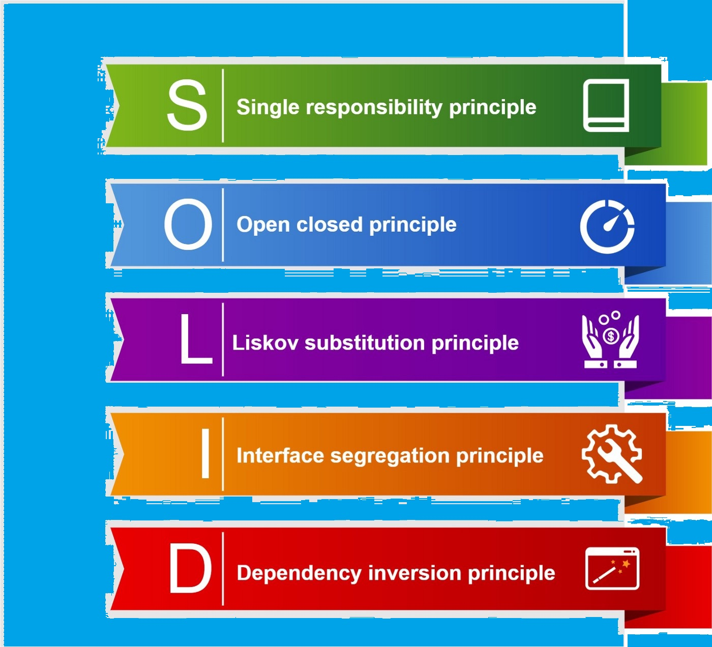

The Single Responsibility Principle states that a class should do one thing and therefore it should have only a single reason to change. To state this principle more technically: Only one potential change (database logic, logging logic, and so on.) in the software’s specification should be able to affect the specification of the class. This means that if a class is a data container, like a Book class or a Student class, and it has some fields regarding that entity, it should change only when we change the data model. Following the Single Responsibility Principle is important. First of all, because many different teams can work on the same project and edit the same class for different reasons, this could lead to incompatible modules. Second, it makes version control easier. For example, say we have a persistence class that handles database operations, and we see a change in that file in the GitHub commits. By following the SRP, we will know that it is related to storage or database-related stuff. Merge conflicts are another example. They appear when different teams change the same file. But if the SRP is followed, fewer conflicts will appear – files will have a single reason to change, and conflicts that do exist will be easier to resolve.
| The SOLID Principles are five principles of Object-Oriented class design. They are a set of rules and best practices to follow while designing a class structure. These five principles help us understand the need for certain design patterns and software architecture in general. So I believe that it is a topic that every developer should learn. This article will teach you everything you need to know to apply SOLID principles to your projects. |
 The Single Responsibility Principle states that a class should do one thing and therefore it should have only a single reason to change. To state this principle more technically: Only one potential change (database logic, logging logic, and so on.) in the software’s specification should be able to affect the specification of the class. This means that if a class is a data container, like a Book class or a Student class, and it has some fields regarding that entity, it should change only when we change the data model. Following the Single Responsibility Principle is important. First of all, because many different teams can work on the same project and edit the same class for different reasons, this could lead to incompatible modules. Second, it makes version control easier. For example, say we have a persistence class that handles database operations, and we see a change in that file in the GitHub commits. By following the SRP, we will know that it is related to storage or database-related stuff. Merge conflicts are another example. They appear when different teams change the same file. But if the SRP is followed, fewer conflicts will appear – files will have a single reason to change, and conflicts that do exist will be easier to resolve.
| The SOLID Principles are five principles of Object-Oriented class design. They are a set of rules and best practices to follow while designing a class structure. |
The Single Responsibility Principle states that a class should do one thing and therefore it should have only a single reason to change. To state this principle more technically: Only one potential change (database logic, logging logic, and so on.) in the software’s specification should be able to affect the specification of the class. This means that if a class is a data container, like a Book class or a Student class, and it has some fields regarding that entity, it should change only when we change the data model. Following the Single Responsibility Principle is important. First of all, because many different teams can work on the same project and edit the same class for different reasons, this could lead to incompatible modules. Second, it makes version control easier. For example, say we have a persistence class that handles database operations, and we see a change in that file in the GitHub commits. By following the SRP, we will know that it is related to storage or database-related stuff. Merge conflicts are another example. They appear when different teams change the same file. But if the SRP is followed, fewer conflicts will appear – files will have a single reason to change, and conflicts that do exist will be easier to resolve.